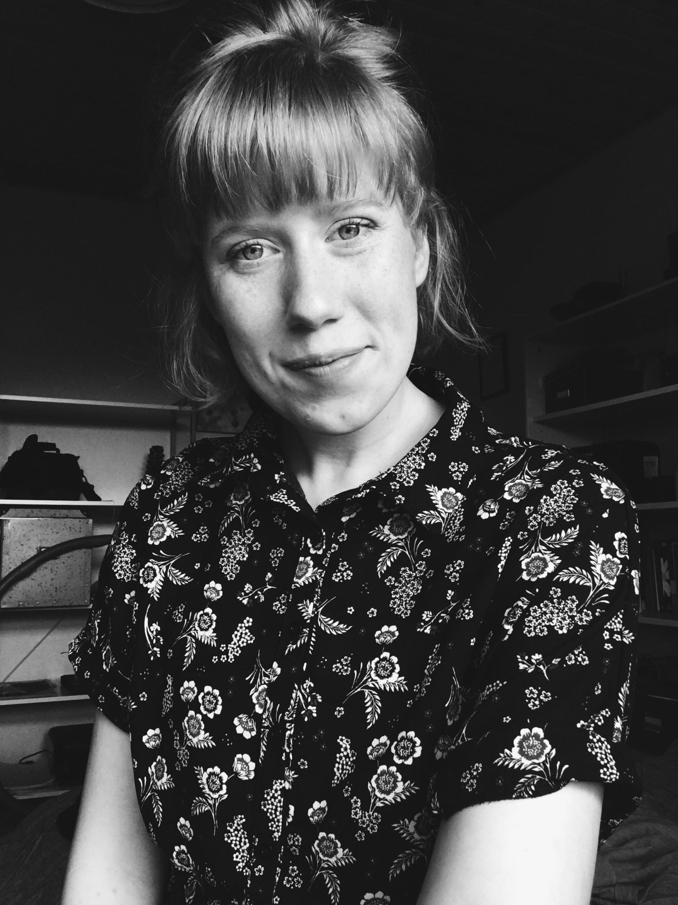

Maria Guðmundsdóttir Ernst
My name is Maria Gudmundsdottir Ernst and I’m 22 years old. I'm half Icelandic and half Danish, and even though I have lived in Denmark most of my life, I feel most at home in the Icelandic nature among the trolls in the mountains.
“I am like a hummingbird that is living the curiosity-driven life”
I'm a very curious person when it comes to trying new things, and therefore it didn't come to my surprise when I decided to change my studies last year. Because before studying Multimedia Design and Communication, I studied Art and Technology at Aalborg University in Aalborg, and what can I say robot technic became a little too much for me.